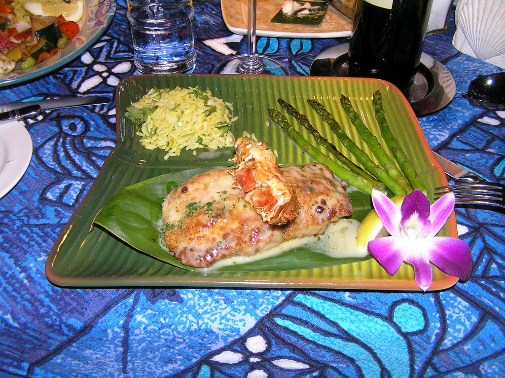

Helicopters, Firetrucks, and Ambulances... oh my!
Carol has had a busy week-- starting with another scene for ER last weekend. It was a night time scene in a west-side neighborhood, with helicopters, firetrucks, and... well, you get it. Watch for Carol's Blazer (vehicle, not clothing), as it may have a more prominent role than Carol in this scene.
The Wizard opened last night to a nearly full house. Unfortunately, I was unable to see the opening show, but I'll be sure to give an update after I see it on Sunday. More press coverage on the Suburban Life site.
I'm still working through our Hawaii pictures. In the meantime, I'll leave you with this picture from Mama's Fish House.

Aren't we just sickeningly cute in our matching Hilo Hattie wear? And SH, as a tribute to you, I also offer this picture. It was delicious!

Originally published on the Blogspot site
Comments (3)
Archived from the original site.
Wow, great presentation on the food!!!! Was that at the same place as the matching outfit picture?
Indeed, it was! I believe it was the crab-stuffed Mahimahi. It tasted as good as it looked.
Carol, Didn't you have enough of the matching outfits when we were kids? lol It's "cute".